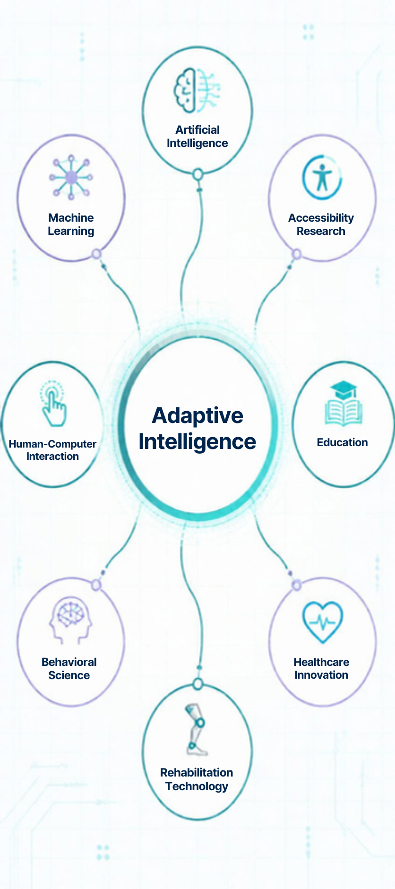

Artificial Intelligence
Exploring AI systems capable of recognizing meaningful individual patterns.
RESEARCH INITIATIVE
Exploring how artificial intelligence can learn from individual patterns and adapt technology around human needs.
THE RESEARCH FOUNDATION
Traditional technology often assumes that users should adapt to the system.
Neuro Adapt AI explores the opposite approach: systems that can learn from the individual and continuously personalize the experience.
The research begins with understanding individual patterns and exploring how those patterns can inform adaptive digital experiences.

CORE RESEARCH QUESTION
Can artificial intelligence identify how neurodiverse children learn and communicate, then adapt digital experiences to better support individual growth?
This question forms the initial research foundation of Neuro Adapt AI. The broader adaptive intelligence vision expands the underlying concept into additional human contexts.
PLATFORM CONCEPT
The person interacts with adaptive learning, communication, or support experiences.
The system analyzes interaction patterns and develops a dynamic understanding of the learner.
Individual patterns can inform how future experiences are presented and personalized.
Parent and professional-facing tools can provide meaningful information about individual patterns and progress.
RESEARCH AREAS
Exploring AI systems capable of recognizing meaningful individual patterns.
Investigating how systems can learn from interactions and improve personalization over time.
Designing technology around the actual needs and experiences of the people using it.
Exploring adaptive technology across different abilities and accessibility needs.
Understanding differences in learning, communication, interaction, and engagement.
Exploring technology that can become more responsive to individual abilities and needs.
Exploring adaptive intelligence in care, aging, rehabilitation, and changing health support environments.
Understanding patterns of interaction and behavior that could inform adaptive systems.
ETHICAL FOUNDATION
Neuro Adapt AI's research vision recognizes that adaptive technology must be developed with careful consideration for privacy, accessibility, human oversight, responsible data use, and the dignity of the people it serves.
The purpose of adaptation is not to replace people. It is to create technology that can provide more individualized support.
ADAPTIVE INTELLIGENCE FRAMEWORK
Identify meaningful individual patterns.
Develop an understanding of individual needs.
Adjust experiences around the individual.
Learn from ongoing interaction.
Allow the system to evolve over time.